The att.net portal served 45 million+ AT&T email users (most over 50) with content from partners like CNN, USA Today, TIME, and Sports Illustrated. As Lead UX Designer, I redesigned the desktop navigation to increase engagement on verticals and boost article page views — working with a PM, AT&T product marketing managers, engineering, an A/B testing engineer, and a scrum master.
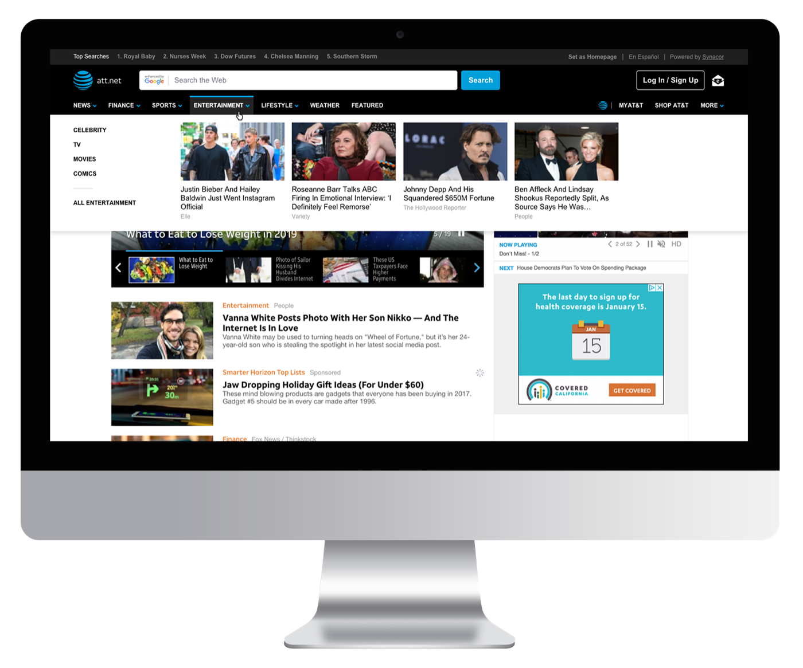
The problem: most users checked email, read a few homepage stories, and bounced. Vertical subcategories were hidden until users clicked into a vertical and waited for a page reload — e.g. clicking "Sports" before ever seeing NFL or NBA.
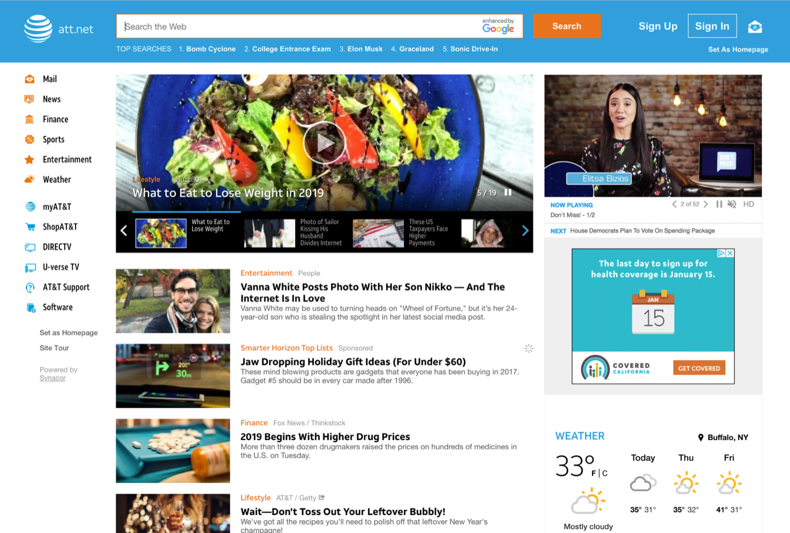
Mobile as proof: a horizontal nav on mobile had already delivered a 41% lift in vertical page views and 13% more article page views, which built the case for bringing it to desktop. (Marvel prototype)
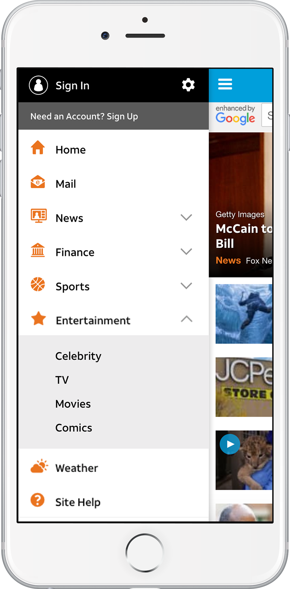
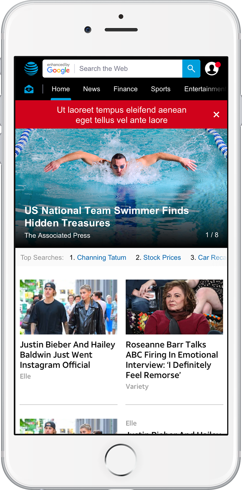
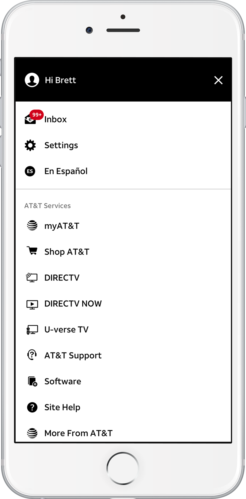
Research & ideation: performance metrics, stakeholder interviews, AT&T user surveys, and competitive analysis all pointed the same way — nearly every major news site used horizontal navigation. I researched nav best practices (7–9 items max) and worked with AT&T to consolidate their many links into a dropdown, keeping focus on the main content verticals.
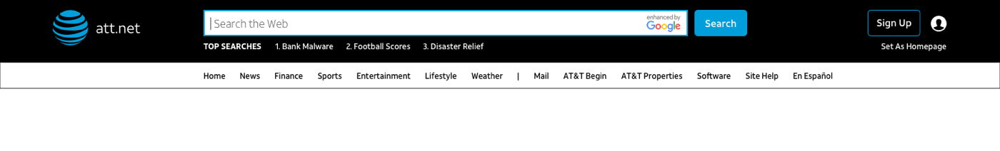
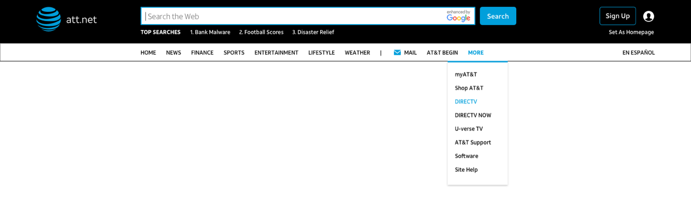
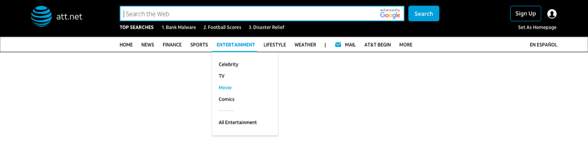
Content-card dropdowns: instead of plain subcategory dropdowns, I explored inserting editor-curated content cards under each category, so hovering previewed the vertical's actual content.
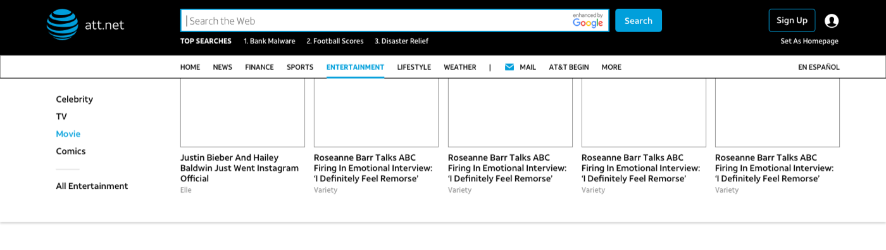
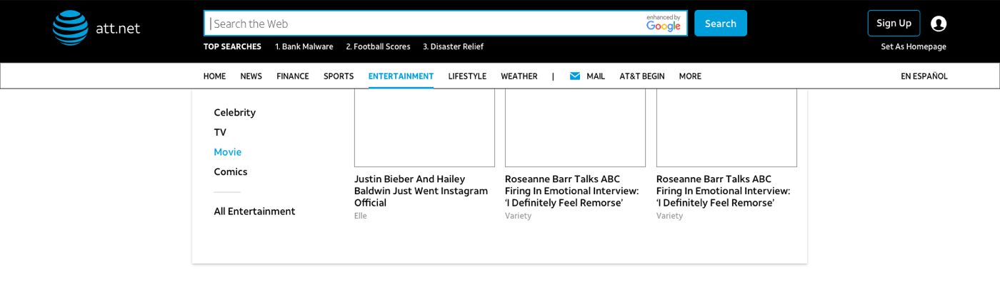
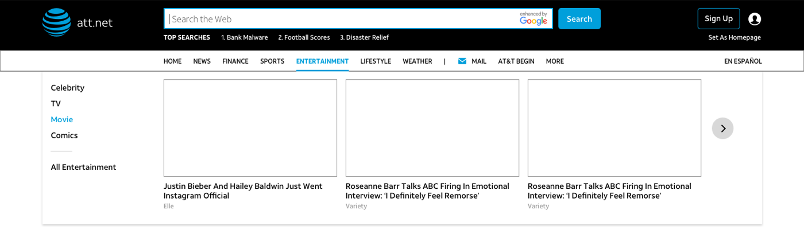
A/B testing (Adobe Test & Target, 10% of users): round one showed users weren't hovering enough to discover the cards. Round two tested tab-like nav items, uppercase vs. title case, and added arrows — the arrows and uppercase text increased clicks into the dropdown by 25%.
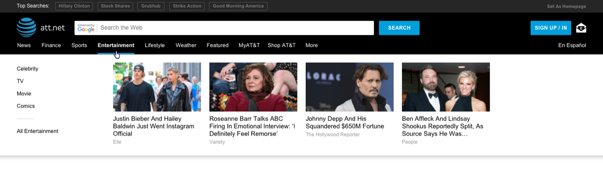
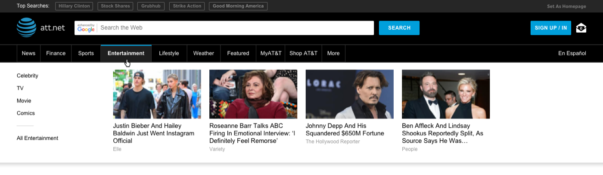
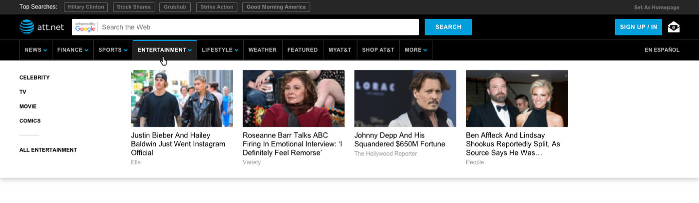
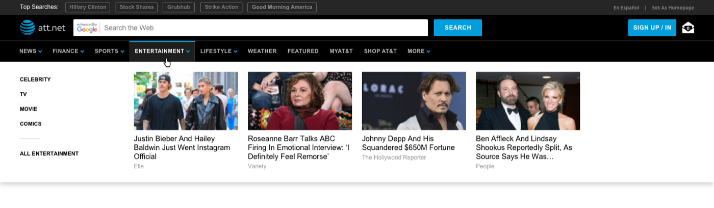
Usability testing: tested with the actual 50+ demographic via UserTesting.com. Testers overwhelmingly preferred the horizontal nav and appreciated the content cards guiding them to similar content.
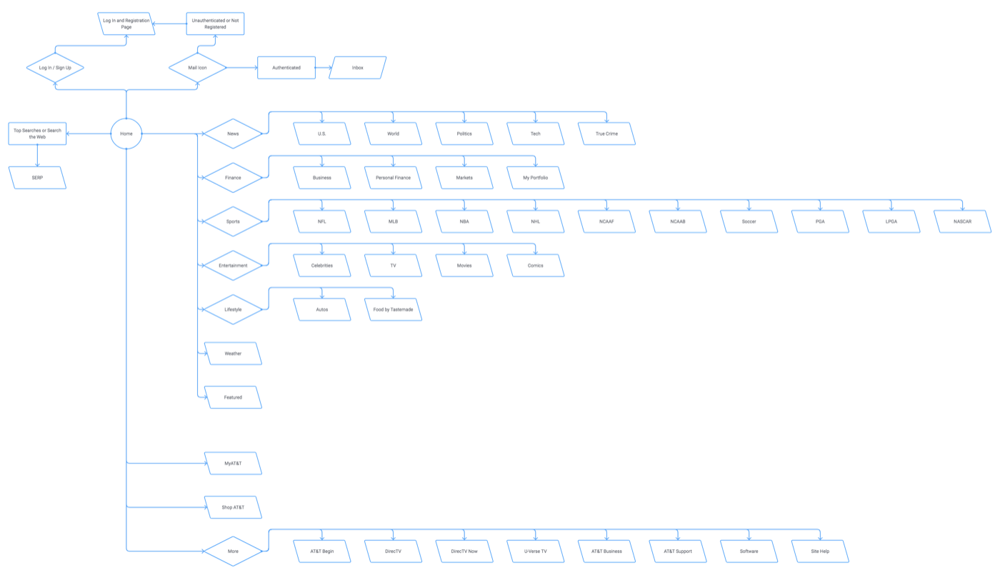
Final design: we landed on separating the content navigation from the AT&T-properties area. Users found the split much clearer, and it resolved the too-many-items problem AT&T had struggled to prioritize down.
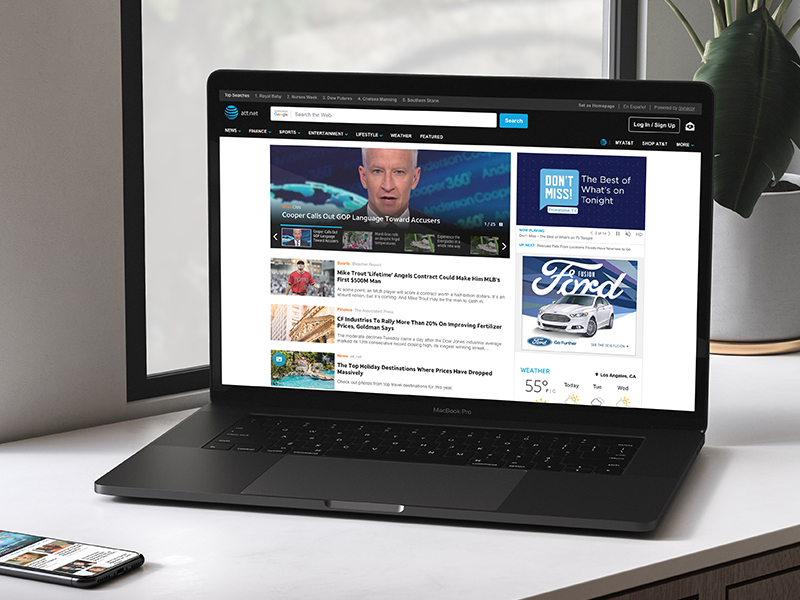